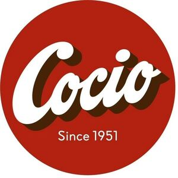

Trade Mark Journal No.2025/031 1 August 2025
WO0000001864503 (24,25,29,30,32)
Office of origin: European Union Intellectual Property Office (EUIPO)
Date of International Registration:2 April 2025
Date of designation in the UK:
2 April 2025

The mark contains the colours red, white and brown.
International priority date claimed: 3 March 2025
(European Union Intellectual Property Office (EUIPO))
(019150283)
- Class 24
- Textiles and textile goods, not included in other classes; bed and table covers; bed linen; pillow cases; fleece rugs; towels made of textile; textile material; textile fabric; curtains of textile or plastic; sleeping bags [sheeting].
- Class 25
- Clothing, footwear, headgear.
- Class 29
- Drinks made from dairy products, including chocolate milk; milk substitutes, including soya drink, oat drink, coconut milk, almond drink, also containing cacao or chocolate; rye-based beverages as milk substitutes, also containing cacao or chocolate; milkshakes; preparations for making dairy-based drinks.
- Class 30
- Chocolate-based beverages; cocoa-based beverages; chocolate-based beverages with milk; cocoa-based beverages with milk; ice cream; powders for ice cream; edible ices; powders for edible ices; frozen yogurt; frozen confectionery; powders and preparations for making cappuccino, cocoa, chocolate, coffee and tea beverages; puddings; flavourings, other than essential oils, for milk shakes.
- Class 32
- Non-alcoholic beverages; whey beverages, also containing cacao or chocolate; non-dairy based beverages, including soya-based, rice-based, oat-based, almond-based, coconut-based, rye-based, plant-based (not milk substitutes), also containing cocoa or chocolate; vegetable drinks and juices; powders for the preparation of beverages.
Arla Foods amba
Representative: ZACCO DENMARK A/S, Arne Jacobsens Allé 15, DK-2300 Copenhagen S, DENMARK